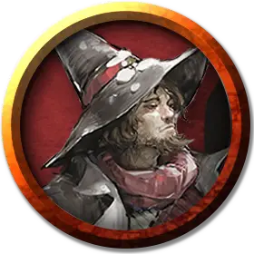

Дазон
Dzaan
Средний Конструкт, законно-злой, именной НИП

Класс Доспеха 10
Хиты 49 (9к8 + 9)
Скорость 30 футов
| мод | спас | ||
|---|---|---|---|
| СИЛ | 10 | +0 | +0 |
| ЛОВ | 11 | +0 | +0 |
| ТЕЛ | 12 | +1 | +1 |
| мод | спас | ||
|---|---|---|---|
| ИНТ | 16 | +3 | +5 |
| МДР | 13 | +1 | +3 |
| ХАР | 15 | +2 | +2 |
Навыки История +5, Магия +5, Обман +4
Чувства пассивное Восприятие 11
Языки Общий, Бездны, Великаний, Инфернальный
Опасность 4 (1100 опыта)
Бонус мастерства +2
Особенности
Использование заклинаний. Дазон является заклинателем 9-го уровня. Его базовой характеристикой является Интеллект (Сл спасброска от заклинаний 13, +5 к попаданию атаками заклинаниями). У него подготовлены следующие заклинания волшебника:
• Заговоры (неограниченно): брызги кислоты [acid splash], малая иллюзия [minor illusion], свет [light], электрошок [shocking grasp];
• 1-й уровень (2 ячейки): волшебная стрела [magic missile]*, маскировка [disguise self], обнаружение магии [detect magic];
• 2-й уровень (2 ячейки): воображаемая сила [phantasmal force], левитация [levitate], невидимость [invisibility];
• 3-й уровень (3 ячейки):замедление [slow], огненный шар [fireball], послание [sending];
• 4-й уровень (3 ячейки): магический глаз [arcane eye], смятение [confusion];
• 5-й уровень (1 ячейка): оживление вещей [animate objects].
* См. раздел «Действия» ниже
Действия
Электрошок (заговор). Рукопашная атака заклинанием: +5 к попаданию, досягаемость 5 фт., одно существо (бросок атаки выполняется с преимуществом если цель одета в доспехи из металла). Попадание: 9 (2к8) урона электричеством и цель не может совершать реакции до начала своего следующего хода.
Брызги кислоты (заговор). Дазон бросает пузырь кислоты в одно видимое им в пределах 60 футов существо или в двух таких существ в пределах 5 футов друг от друга. Цель должна преуспеть в спасброске Ловкости Сл 13, иначе получит 7 (2к6) урона кислотой.
Волшебная стрела (заклинание 1-го уровня, требуется ячейка заклинаний). Дазон создаёт стрелу наполненную магической силой. Она безошибочно поражает одно видимое подобие в пределах 120 футов от себя существо, нанося 5 (1к4 +1) урона силовым полем. Если подобие использует при произнесении заклинания ячейку для заклинаний 2-го уровня то оно создаёт две таких стрелы
Описание
Дазон был Красным Волшебником Тэя, изучавшим магию школы Иллюзий. Лидеры Волшебного Братства приветствовали его с распростертыми объятиями, обрадовавшись возможности включить в свои ряды Красного Волшебника. Дазон мог бы стать силой, с которой пришлось бы считаться в братстве, если бы стремление к власти не привело его в долину Ледяного Ветра, где он и был убит жителями Восточной Гавани после того, как нажил слишком много врагов.
Смерть Дазона
Проблемы Дазона начались после того, как он отделился от своих коллег-волшебников и нанял авантюристов, чтобы они прочесали долину Ледяного Ветра в поисках руин нетерильцев. Одна из этих групп обнаружила погребенную в снегах башню в тундре (см. главу 2, раздел «Потерянный шпиль Нетерила») и Дазон постарался уничтожить всех, кто о ней знал, включая обнаруживших её искателей приключений, и нескольких жителей Десяти Городов, с которыми они успели пообщаться. Устроив в башне свою секретную базу, Дазон отправился в Восточную Гавань для закупки припасов. И хотя Дазон принял меры предосторожности в виде магической маскировки, члены местного ополчения узнали его по его походке и манере общения. Они схватили его, заткнули ему рот кляпом, конфисковали книгу заклинаний и приговорили к смерти.
У персонажей нет возможности поговорить с Дазоном. Впервые они встречают его в Восточной Гавани, привязанным к столбу и охваченным пламенем (см. Восточная Гавань, «Непосильные проблемы»). Жители Десяти Городов наслаждаются процессом его казни, согреваясь у костра, в котором останется лишь пепел Дазона, да и тот вскоре будет унесен ветром.
Подобие Дазона
Перед своей казнью, втайне ото всех, Дазон использовал свиток с заклинанием подобие [simulacrum] для создания копии самого себя. Подобие обитает в погребенном в снегах нетерильском шпиле, ожидая возвращения своего создателя.
Подобие выглядящее и действующее как Дазон, имеет половину хитов Дазона и не может восстанавливать израсходованные ячейки заклинаний. Оно потратило впустую свои ячейки заклинаний 3-го уровня, пытаясь безрезультатно достучаться до Дазона с помощью заклинания послание [sending], а другие ячейки заклинаний на то чтобы выжить среди опасностей шпиля. Оставшиеся ячейки оно использует крайне экономно.
В погребенной нетерильской башне есть специальная комната, которая может превратить подобие в реального человека, или любую магическую иллюзию в реальную вещь, если на то пошло. Если провести эту операцию, подобие фактически становится клоном Дазона, подлинником оригинала во всех отношениях. В это случае, блок статистики Дазона изменяется следующим образом:
- У него есть столько ячеек заклинаний, сколько есть у волшебника 9-го уровня (четыре ячейки 1-го уровня, три ячейки со 2-го по 4-й уровни и одна ячейка 5-го уровня), но у него нет книги заклинаний, и поэтому он не может изменить свой список подготовленных заклинаний.
- Если он заканчивает продолжительный отдых, у него появляются следующие дополнительные ячейки заклинаний, которые позволят ему использовать нижеперечисленные заклинания:
3-й уровень (3 ячейки): замедление [slow], огненный шар [fireball], послание [sending];
4-й уровень (3 ячейки): магический глаз [arcane eye], смятение [confusion];
5-й уровень (1 ячейка): оживление вещей [animate objects]. - Его максимум хитов становится равным 49 (9к8 + 9), а опасность 2 (450 опыта). Если он заканчивает продолжительный отдых и восстанавливает все свои потраченные ячейки его опасность становится равной 4 (1100 опыта).
Компаньон. Из-за того, что Красных Волшебников ненавидят и боятся по всему Фаэруну, они действуют тайно и редко выезжают за границы Тэя без сопровождения. Обычно в качестве слуг и телохранителей они предпочитают использовать нежить, так как считают, что нежить более послушна, чем живые существа. Телохранитель Дазона — умертвие [wight] из Тэя по имени Кринтаас. Когда Дазон отправился в Восточную Гавань, он приказал своему компаньону остаться с подобием и присматривать за ним и погребенным нетерильским шпилем.